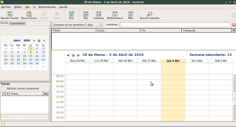
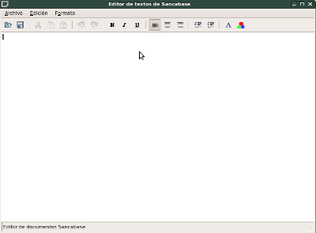

Administrador de Centros
de Formación Profesional

Gestiones:
Básicamente podemos hacer tres cosas:
- Agenda:
Nos permite vincular nuestros contactos, calendario y agenda con el Google Calendar y con el Mozilla Sunbird, a los efectos de no tener que usar una aplicación externa para poder hacer un manejo de nuestra agenda y eventos. - Nueva gestión:
Permite editar con un procesador de textos propio, cartas, documentos, gacetillas, etc. Podemos guardarlo como .txt (texto plano) o como .xml(texto enriquecido) y no necesitaremos abrir OpenOfficeOrg para hacer pequeñas cosas y así centralizar nuestro trabajo en una sola aplicación, Sancabase. - Abrir:
Permite abrir un documento .txt o .xml elaborado con el editor embebido o con un medio externo.